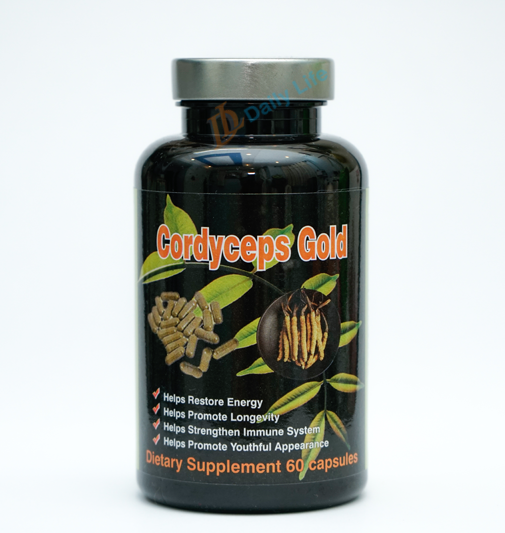

Cordyceps Gold
Cordyceps are a type of fungus, better known as a species of edible medicinal, nutritionally beneficial mushrooms. While closely related to other mushrooms, cordyceps aren’t technically the same as most mushrooms and instead are classified as a powerful form of Ascomycetes fungus.
Cordyceps are harvested in high mountain regions of the world, especially parts of the Himalayas in China, and are actually grown on the backs of caterpillars! Considered to be “exotic” healers, cordycep mushrooms have been mostly rare for much of history (considering they’re only found above altitudes of 3,800 meters above sea level during certain times of the year and in only certain parts of the world where these special caterpillars exist). Yet they have a reputation for being “a precious longevity-promoting herb.”
How does Cordyceps work?
Prized for their natural ability to fight free radicals, infections and inflammation, cordyceps are impressive disease-fighting mushrooms that have been used for centuries to reduce symptoms of respiratory disorders, coughs, colds, liver damage and much more. They’re a true “superfood” in the way that they fight the effects of aging and stress, help keep the body free from disease, and also increase energy levels.
Cordycep fungus is parasitic in nature because it grows on a type of caterpillar and then winds up eating its own host! The base of the mushroom forms from the insect’s larva and is dark brown to black, attaching itself to the organism and growing about six inches long. Once it fully matures, cordyceps actually consume more than 90 percent of the infected insect. They then swell up and enlarge to become about 300–500 milligrams in weight.
The first people to discover cordyceps’ benefits initially observed animals eating the wild fungus and growing strong in the process. Farmers and herders began to use the fungus in powder form and to make tonics and teas. Some of the first uses for these tonics were increasing milk production and improving reproductive capacity of livestock. Later on, people began drying cordyceps in sunlight to preserve their benefits.
It’s believed that the many anti-inflammatory benefits of cordyceps come from their ability to positively affect the immune system, fighting oxidative stress and stimulating protective cells that keep the body free from mutations (like cancerous cells) and infections. Studies have found that cordyceps can act like natural cancer treatments in some cases, preventing the growth of tumors (especially in the lungs and on the skin).
Considered a type of natural “immuno-potentiating drug,” corycep supplements are now used to bring the immune system back to normal following life-threatening infections or illnesses. Cordyceps can help control autoimmune disorders, excessive inflammation and tissue damage while speeding up healing time. Additionally, research shows that cordyceps can act like mild stimulants or “adaptogen herbs”, fighting stress or fatigue and naturally increasing energy levels. Some of the most researched benefits of corceyps also include improving athletic performance, increasing immunity against viruses and even promoting longevity.
In addition to fighting cancer, cordyceps has been used in traditional herbal medicine to treat:
- respiratory infections like chronic bronchitis
- coughs, colds and the flu
- reproductive problems and sexual dysfunction
- kidney disorders
- bladder infections and urination problems
- asthma
- hepatitis B
- low circulation and irregular heartbeats
- heart disease and high cholesterol
- liver disorders
- muscle weakness
- chronic fatigue syndrome and low energy
- dizziness
6 benefits of Cordyceps
- Increase Immune Function and Have Anti-Aging Effects
- Pharmacological and biological studies have found that cordyceps positively impact immune function and benefit the cardiovascular, respiratory, endocrine and reproductive systems. Cordyceps can help fight cancer and immunological disorders because they contain inflammation-lowering polysaccharides, modified nucleosides and cyclosporines. Animal studies have demonstrated benefits to heal autoimmune diseases like leaky gut syndrome and antitumor activity in various types of cancers when either synthetic or natural and cordycep supplements are administered.
- Some evidence shows that taking cordyceps supplements during or following chemotherapy can lower symptoms of the treatment and increase the body’s defense mechanisms. There’s also evidence that they help restore normal fat mobilization and reduce oxidative damage, which contributes to nearly every chronic disease from heart disease to cognitive decline. (1)
- Research done by the School of Pharmaceutical Sciences at Peking University in Beijing found that cordycep extract supplements had anti-aging effects on mice and improved activity of antioxidants, including superoxide dismutase and glutathione peroxidase. Cordyceps also lowered the level of lipid peroxidation and monoamine oxidase activity that contributed to aging in the mice. All results pointed to the fact that cordycep supplementation is effective for improving functioning of the brain, immune system and reproductive/sexual functions. (2)
- Improve Stamina and Athletic Performance
- A 2010 study published in the Journal of Alternative and Complementary Medicine demonstrated that supplementation with Cs-4 (Cordyceps sinensis) improved exercise performance and contributed to overall markers of wellness in older adults. (3) Considered an energizing adaptogen (similar to other superfood herbs like maca or cocoa), cordyceps can help fight fatigue, treat muscle aches and prevent weakness.
- Several studies suggest that cordyceps can improve physical abilities, endurance and stamina partially because they boost the body’s supply of ATP, one of the primary sources of energy during exercises. (4) Cordyceps contain adenosine, a type of nucleic acid that is a component needed to make ATP, an “energy carrier” that is depleted in the muscles during physical exercise. (5)
- Act Like a Natural Aphrodisiac
- Traditionally, people of both sexes took tonics made from cordyceps to enhance their libidos and reproductive function. It appears that cordycep supplements can help the body utilize oxygen more efficiently and improve blood flow (so far, in animal studies), which is important for physical health and sexual function. (6) Improved endurance, anti-fatigue effects and lower levels of inflammation are several other reasons that cordyceps improve fertility. Thus, cordyceps may be utilized as a natural treatment for infertility and a natural remedy for impotence.
- Fight Diabetes
- Two active constituents in cordyceps, d-mannitol cordycepin and 3’-deoxyadenosine, are partially responsible for various physiological actions that help control insulin and blood sugar levels. In animal studies, cordycep supplements have helped combat hypoglycemic effects in normal and diabetic mice. (7) This shows cordyceps may be useful to naturally treat diabetes.
- Improve Liver Function and Detoxification
- Cordyceps appear to help improving liver function, especially in people with damaged livers due to disorders like hepatitis B. Because the liver helps remove toxins from the body, enhanced liver function is one way that cordyceps positively impact the immune system.
- Research done by the Department of Analytical Chemistry at the Academy of Chinese Sciences found that cordyceps have positive influence on oxidative stress, energy metabolism and amino acid, protein and choline metabolism, thanks to their role in helping with digestive organ function. Over a period of eight weeks, metabolic disorders, signs of liver disease and heart damage in mice were significantly improved with daily oral administration of cordyceps. (8)
- One reason that positive effects of both the liver and heart were observed together is that a healthier liver also allows for better digestion and utilization of fatty acids, so it’s not surprising that cordyceps may be able to help improve triglyceride and cholesterol levels and benefit heart health. (9)
- Fight Respiratory Infections
- Research has demonstrated that cordyceps help alleviate symptoms of several respiratory illnesses, including working as a natural remedy for chronic bronchitis, coughs and asthma. (7) Supplementation can help improve detoxification and circulation so the amount of oxygen reaching the lungs improves.
- In animal studies, cordyceps have also shown the ability to increase the number of T-helper cells that fight infections while not increasing the the number of T-suppressor cells. (10) This makes them beneficial for speeding up the time it takes to fight off illness once an infection or virus sets in.
History of Cordyceps and Interesting Facts
Cordyceps (species name cordycep sinensis) are considered a time-honored superfood that first originated in Traditional Chinese Medicine at least 5,000 years ago! Their medicinal uses were described in old Chinese medical books, and traditional holistic healers have been using them to cure dozens of diseases without the use of chemical medications for generations. Local folk healers were said to use cordyceps either alone or in combination with other TCM herbal treatments to fight more than 20 different ailments, such as bronchitis and heart disease.
Cordyceps and other medicinal plants have long been used in Chinese, Christian and Hindu religious ceremonies and are believed to be linked to longevity and immortality. In Ayurvedic medicine, for example, mushrooms are said to be beneficial for enhancing “vigor and vitality.” Traditional healers in Sikkim recommended the fungus/mushrooms, including cordyceps, “for all illnesses as a tonic, because they claimed that it improved energy, appetite, stamina, libido, endurance, and sleeping patterns.” (11)
How to Use Cordyceps Plus Potential Side Effects
For many decades, cordyceps were difficult to obtain, expensive and not widely used. Today, wild cordyceps are still not easy to come by, but luckily scientists have figured out how to reproduce cordyceps synthetically in laboratory settings, making them much more widely available to the public. (12) Supplements are now available in most health food stores at much more affordable prices and appear to offer the same benefits as the wild varieties. Another advantage of growing controlled species of cordyceps is being able to control contamination, such as harmful bacteria and heavy metals.
Cordyceps Dosage
It’s now possible to purchase cordyceps tablets, powders and capsules from most health food stores and online. Many people take them by mouth, but some even like to open the capsules and use the powder in teas, soups and stews (how they were traditionally taken in China for hundreds of years).
Dosage depends on the reason they are being used, but most studies in humans have used 1,000-3,000 milligrams per day, which doesn’t seem to be associated with any common side effects. Follow the dosage advice on the product label, or speak with an herbalist about treating a specific condition. You don’t necessarily need to take them every day if you’re only trying to prevent future illnesses and boost your immune system. In that case, once or twice a week with a lower dose works well.